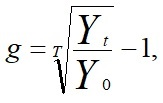

Проблема экономического роста и его темпов является одной из важнейших макроэкономических проблем. Ее изучение позволяет:
- понять причины различий в уровне жизни и темпах экономического роста между различными странами в один и тот же период времени (межстрановые различия) и внутри страны в разные периоды времени (межвременные различия);
- выявить факторы экономического роста;
- определить условия сохранения высокого уровня жизни в странах, уже его достигших;
- разработать меры государственной политики по обеспечению и ускорению экономического роста.
Графически экономический рост может быть представлен тремя способами:
1) через кривую реального ВВП — линия тренда отражает долгосрочную тенденцию увеличения реального ВВП;
2) через кривую производственных возможностей — КПВ, которая отражает ограниченность ресурсов в экономике в определенный период времени (Основные виды товаров, производящиеся в экономике, — это инвестиционные и потребительские товары. Каждая точка на кривой производственных возможностей соответствует некоторому сочетанию количеств потребительских и инвестиционных товаров, которое можно произвести с помощью имеющихся в экономике ресурсов);
3) с помощью модели совокупного спроса — совокупного предложения (модели AD-AS). Поскольку экономический рост представляет собой увеличение потенциального ВВП, т.е. реального ВВП в долгосрочном периоде, то графически его можно представить как сдвиг вправо кривой долгосрочного совокупного предложения LRAS и рост объема выпуска от Y* до Y*'.
Главная цель экономического роста — рост благосостояния и увеличение национального богатства. Чем больше производственный потенциал страны и чем выше темпы экономического роста, тем выше уровень и качество жизни. Как однажды заметил известный американский экономист, лауреат Нобелевской премии Роберт Лукас (Robert Lucas): "Значение этих проблем для благосостояния человечества таково, что, начав размышлять над ними однажды, невозможно думать о чем-либо другом".
Под экономическим ростом обычно понимают увеличение реального дохода в экономике (ВНП, ВВП или НД), а также рост реального выпуска на душу населения. Соответственно, для измерения экономического роста используются показатели абсолютного прироста или темпов прироста реального объема выпуска в целом или на душу населения. Например:
Δ Yt = Yt - Yt-1,
или
yt = ΔYt / Yt-1,
где t - индекс времени.
Более точным показателем уровня благосостояния, качества жизни выступает величина реального ВВП на душу населения (real GDP per capita) — относительный показатель, отражающий стоимость того количества товаров и услуг, которое не вообще производится в экономике, а приходится в среднем на одного человека. Рост величины ВВП на душу населения означает, что на одного жителя страны приходится все больше товаров и услуг, что благосостояние увеличивается. В макроэкономических моделях этот показатель обычно обозначается как Y/L (отношение реального ВВП к численности рабочей силы, которая составляет большую часть населения любой страны). Уровень жизни в большой степени зависит от темпов прироста населения. С одной стороны, численность населения страны определяет численность рабочей силы, т.е. трудовых ресурсов. Неудивительно, что страны с большим населением (США, Япония) имеют гораздо более высокий ВВП, чем Люксембург и Нидерланды. Однако, с другой стороны, рост населения уменьшает показатель среднедушевого ВВП, т.е. ведет к снижению уровня жизни. Об экономическом росте можно говорить лишь, если происходит рост уровня благосостояния, т.е. если экономическое развитие сопровождается более быстрым ростом реального ВВП по сравнению с ростом населения.
Среднегодовой темп прироста ВВП равен:

и представляет собой среднее геометрическое темпов прироста за определенное количество лет.
Для облегчения расчетов обычно используется «правило 70» которое утверждает, что если какая-то переменная растет темпом х % в год, то ее величина удвоится приблизительно через 70/х лет. Если ВВП на душу населения ежегодно возрастает на 1% (ga = 1), то его величина удвоится через 70 лет (70/1). Если ВВП на душу населения возрастает на 4% в год (ga = 4), то его величина удвоится примерно через 17,5 лет (70/4). Так, каждое поколение американцев считает своей целью оставить после себя удвоенный ВВП для будущего поколения. Для этого экономика должна иметь средние темпы роста, равные примерно 3% в год.
Явление, когда более бедная страна при прочих равных условиях может обеспечить более высокие темпы экономического роста и со временем догнать по уровню экономического развития более богатую страну, получило название эффекта быстрого старта (catch-up effect), который объясняется тем, что стране с низким экономическим потенциалом и уровнем ВВП легче обеспечить и поддерживать высокие темпы экономического роста. Например, для обеспечения темпа прироста ВВП, равного 5%, стране, у которой первоначальный объем ВВП Y0 = 100 млрд дол., необходимо увеличить объем выпуска на 5 млрд дол., а стране, у которой Y0 = 1000 млрд дол. — на 50 млрд дол. Или: если в каждой из стран выпуск увеличивается на 10 млрд дол., то для первой страны темп экономического роста составит 10%, а для второй — только 1%.
Выделяют два типа экономического роста: экстенсивный и интенсивный.
Экономический рост называется экстенсивным, если он осуществляется за счет привлечения дополнительных ресурсов и не меняет среднюю производительность труда в обществе. Интенсивный рост связан с применением более совершенных факторов производства и технологии, т.е. осуществляется не за счет увеличения объемов затрат ресурсов, а за счет роста их отдачи.
Интенсивный рост может служить основой повышения благосостояния населения. Обычно говорят о преимущественно интенсивном или экстенсивном типе экономического роста в зависимости от удельного веса тех или иных факторов, вызвавших этот рост.
Факторы экономического роста часто группируют в соответствии с типами экономического роста. К экстенсивным факторам относят рост затрат капитала, труда, к интенсивным - технологический прогресс, экономию на масштабах, рост образовательного и профессионального уровня работников, повышение мобильности и улучшение распределения ресурсов, совершенствование управления производством, соответствующее улучшение законодательства и т.д., все, что позволяет качественно усовершенствовать как сами факторы производства, так и процесс их использования. Иногда в виде самостоятельного фактора экономического роста выделяют совокупный спрос как главный катализатор процесса расширения производства. В качестве причин, сдерживающих экономический рост, часто называют ресурсные и экономические ограничения, а также широкий спектр социальных издержек, связанных с ростом производства.
Значение экономического роста состоит в том, что он расширяет возможности повышения уровня благосостояния. На его основе создаются условия осуществления социальных программ, ликвидации бедности, развития науки и образования, решения экологических проблем. Экономический рост увеличивает производственные возможности экономики. Благодаря ему создаются новые виды ресурсов, новые эффективные технологии производственных процессов, позволяющие увеличивать и разнообразить производство товаров и услуг, повышать качество жизни. Однако сам по себе он не способен решить многие экономические, социальные, экологические и другие проблемы.
Более того, экономический рост имеет существенные издержки, такие, как:
• альтернативные издержки — необходимость жертвовать текущим потреблением (потреблением в настоящем), чтобы обеспечить экономический рост и иметь возможность увеличить потребление (благосостояние) в будущем. Основой экономического роста служат инвестиции, обеспечивающие увеличение запаса капитала. Проблема инвестиций — это проблема межвременного выбора (между настоящим и будущим). С одной стороны, увеличение инвестиций в производство инвестиционных товаров (оборудования, зданий, сооружений), обусловливающих экономический рост и процветание, ведет к сокращению ресурсов, направляемых на производство товаров и услуг, используемых для текущего потребления. С другой стороны, основу инвестиций составляют сбережения, которые являются частью располагаемого дохода (Yd = С + S). При данной величине располагаемого дохода рост сбережений (S) для обеспечения увеличения инвестиций и, следовательно, роста потребления в будущем требует сокращения потребления (С) в настоящем;
• издержки, связанные с уменьшающейся отдачей от капитала. По мере роста запаса капитала дополнительный выпуск, производимый с помощью дополнительной единицы капитала, уменьшается. Из-за уменьшающейся отдачи от капитала более высокие сбережения и инвестиции приведут к более высокому росту только на некоторый начальный период времени, но рост будет замедляться по мере того, как экономика будет накапливать более высокий уровень запаса капитала. Таким образом, рост нормы сбережений дает лишь временный эффект ускорения экономического роста. В долгосрочном периоде более высокая норма сбережений приводит к более высокому уровню производительности труда и более высокому доходу, но вовсе не к ускорению темпа роста этих показателей. Ускорение темпов экономического роста обеспечивает только технологический прогресс.
Именно уменьшающейся отдачей от капитала могут быть объяснены более низкие темпы роста развитых стран и эффект быстрого старта стран с относительно более низким экономическим потенциалом. Дополнительное увеличение капитала в бедной стране увеличивает рост в большей степени, чем такое же увеличение капитала в богатой стране. В развитых странах техническая оснащенность производства очень высока. Вследствие этого даже значительный прирост капитала, приходящегося на одного рабочего, приводит к весьма небольшому приросту производительности труда. Поэтому при равенстве доли ВВП, направляемой на инвестиции, бедные страны могут достичь более высоких темпов развития, чем богатые. Например, в течение 30 последних лет США и Южная Корея инвестировали примерно одну и ту же долю ВВП. Однако рост ВВП США составил в среднем 2%, в то время как у Южной Кореи этот показатель достиг 6%;
• издержки, связанные с загрязнением окружающей среды. Постоянные высокие темпы экономического роста может обеспечить только технологический прогресс, основанный на использовании изобретений и научных открытий. Однако многие изобретения и нововведения (использование двигателя внутреннего сгорания, реактивного двигателя, производство пластмасс, синтетических волокон, химических удобрений, получение атомной энергии), с одной стороны, ускорили экономический рост, обеспечили более высокий уровень благосостояния и комфортности, но, с другой стороны, привели к загрязнению окружающей среды и даже угрозе экологической катастрофы. Парадокс состоит в том, что решение экологических проблем может быть найдено лишь на путях дальнейшего развития технологического прогресса.
На рост экономического потенциала и уровня жизни населения существенное воздействие может оказать экономическая политика государства. Прежде всего, с помощью экономической политики государство может влиять на величину физического и человеческого капитала. Если растет запас капитала в экономике, то экономический потенциал страны увеличивается и экономика может производить в будущем большее количество товаров и услуг. Поэтому, если правительство хочет увеличить производительность ресурсов, ускорить экономический рост и повысить уровень жизни своих граждан, оно должно проводить следующую политику:
• стимулировать внутренние инвестиции и сбережения. Рост запаса капитала в экономике происходит с помощью инвестиций. Чем выше доля инвестиций в экономику (например, в Японии, Южной Корее), тем выше темпы экономического роста. Поскольку рост запаса капитала непосредственно влияет на рост производительности труда, то основное условие экономического роста — увеличение инвестиций. Основу инвестиций составляют сбережения. Если общество потребляет меньше, а сберегает больше, оно имеет больше ресурсов для инвестирования;
• стимулировать инвестиции из-за границы. Увеличение капитала может происходить не только за счет внутренних, но и за счет иностранных инвестиций. Различают два вида иностранных инвестиций: прямые и портфельные. Прямые иностранные инвестиции — это инвестиции в капитал, которыми владеют и распоряжаются (управляют) иностранцы (нерезиденты). Примером прямых иностранных инвестиций может служить создание иностранной фирмой филиала в данной стране. Портфельные иностранные инвестиции — это инвестиции в капитал, финансируемые иностранцами, но находящиеся под управлением производителей (резидентов) данной страны. Пример портфельных иностранных инвестиций — покупка иностранцами акций и облигаций, выпускаемых фирмами данной страны. Иностранные инвестиции обеспечивают рост экономики страны. Несмотря на то, что часть доходов фирм, созданных при участии иностранного капитала, уходит за границу (прибыль иностранных фирм от прямых инвестиций и полученные дивиденды и проценты по ценным бумагам от портфельных инвестиций), зарубежные источники финансирования увеличивают экономический потенциал страны, повышают уровень производительности и оплаты труда. Кроме того иностранные инвестиции позволяют развивающимся странам освоить самые передовые технологии, разрабатываемые и используемые в развитых странах;
• стимулировать образование. Образование — это инвестиции в человеческий капитал. В США, по данным статистики, каждый год, затраченный на учебу, повышает зарплату работника в среднем на 10%. Образование не только повышает производительность труда человека, его получившего, оно имеет положительный внешний эффект (экстерналию) (positive externality).
Внешний эффект имеет место тогда, когда действие одного человека сказывается на благосостоянии другого человека или других людей. Образованный человек может выдвигать идеи, которые становятся полезными для других, всеобщим достоянием, ими имеет возможность пользоваться каждый, попавший в сферу действия положительного внешнего эффекта образования. Это аргумент в пользу государственного образования. В этой связи особенно негативными последствиями обладает явление, получившее название утечки мозгов (brain drain), т.е. эмиграции наиболее образованных и квалифицированных специалистов из бедных стран и стран с переходной экономикой в богатые страны, имеющие высокий уровень жизни;
• стимулировать исследования и разработки. Научные исследования и разработки служат основой роста технологических знаний — главного фактора ускорения темпов экономического роста. Со временем знания становятся общественным благом, которым могут пользоваться все. Поэтому технологические знания, как и инвестиции в человеческий капитал, также обладают положительным внешним эффектом. Исследования и разработки могут быть простимулированы грантами, снижением налогов и патентами для установления временных прав собственности на изобретения;
• защищать права собственности и обеспечивать политическую стабильность. Под правом собственности понимается возможность людей свободно распоряжаться принадлежащими им ресурсами. Чтобы люди хотели работать, сберегать, инвестировать, торговать, изобретать, они должны быть уверены, что результаты их труда и принадлежащая им собственность не будут украдены и что все соглашения будут выполнены. Даже малейшая возможность политической нестабильности создает неопределенность в отношении прав собственности, потому что революционное правительство может конфисковать собственность, особенно капитал. Это направление политики важно, во-первых, как институциональная основа для увеличения внутренних инвестиций и особенно для привлечения иностранных инвестиций и, во-вторых, для защиты интеллектуальной собственности, что является стимулом роста технологического прогресса;
• стимулировать свободную торговлю. Свободная торговля подобна технологическим достижениям. Она позволяет стране не производить всю продукцию самой, а покупать у других стран те виды продукции, которые они производят более эффективно. Часто для развивающихся стран выдвигается аргумент о необходимости защиты молодых отраслей промышленности от иностранной конкуренции и проведении поэтому протекционистской политики, ограничивающей или даже запрещающей международную торговлю. Этот аргумент несостоятелен, поскольку расширение торговли с развитыми странами позволяет развивающимся странам не только экономить на издержках и не выпускать продукцию, производство которой неэффективно, но и пользоваться новейшими мировыми техническими и технологическими достижениями;
• контролировать рост населения. Для обеспечения роста благосостояния темпы роста производства должны быть выше темпов роста населения. Высокие темпы роста населения делают остальные факторы производства более "тонкими" (в расчете на одного рабочего) и уменьшают возможности для роста экономики. Так, быстрый рост населения снижает капиталовооруженность (количество капитала, приходящегося на одного рабочего), что ведет к снижению производительности труда и уровня благосостояния.